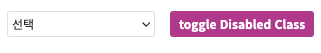
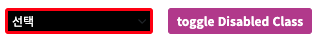

SelectBox의 disabledClass를 적용하는 예제입니다. disabledClass는 SelectBox가 disabled 됐을 때 적용하는 class를 지정하는 속성입니다.
SelectBox의 disabled Class 적용하기
그림 1.[브라우저 실행 예제] - 기본 상태

그림 2.[브라우저 실행 예제] - Disabled 적용 상태

[필수] disabledClass = "사용할 Class 명" //disabled가 될 때 지정할 class를 지정합니다.
예시) disabledClass="P00335_toggleClass"
예제에서는 화면 내부 css를 작성하여 적용했습니다.
CSS 작성
// SelectBox의 윤곽선, 배경 색상 지정 .P00335_toggleClass {border :3px solid red; background-color : black; } // SelectBOx의 내부 텍스트 컬러 지정 .P00335_toggleClass .w2selectbox_label {color : white;}
STEP3은 disabled class 적용을 보여주기 위해 삽입한 Trigger의 event 작성입니다.
스크립트 - disabled 상태 전환을 위한 Trigger Event
scwin.btn_toggle_onclick = function (e) { // 현재 SelectBox 상태에 따라 True/false 반환 var _disabled = slt_main.getDisabled(); // 현재 상태 반대로 설정해 toggle slt_main.setDisabled(!_disabled); };
diselabedClass
getDisabeld
setDisabled(boolean)